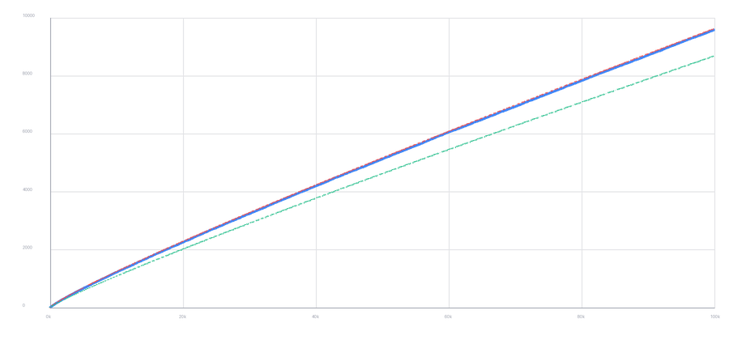
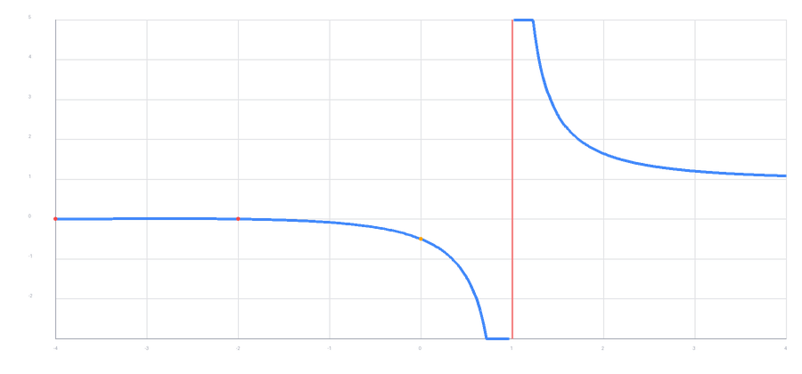

1851 · 复变函数与 Riemann 面
用 Cauchy–Riemann 方程定义解析函数；把多值函数变成 Riemann 面上的单值函数；Riemann 映射定理。「解析延拓」的语言基础就在他八年前自己的博士论文里。
交互式讲义 · 面向理工科本科生
从欧拉乘积到黎曼猜想 —— 以及怎样用 Lean 4 把这些命题写成机器可检查的形式
1859 年，黎曼在一篇约六页的论文里做了一件当时几乎没人看得懂的事：把「数素数」这个离散的算术问题，变成一个关于复变函数零点的问题。本讲义沿着这条路走一遍，并让你可以亲手拖动、播放、验证每一步。
第 0 章 · 地图
把模糊的东西放到精确的语言里，它才会真正被理解。
这份讲义只讲一条主线。它不打算替代数论教材，而是把黎曼 1859 年论文的逻辑链拆开，让具备微积分、线性代数与复变函数初步的读者也能跟上。凡是超出这个范围的技术细节，都放进「展开证明」折叠块里，第一遍可以跳过。
核心思想可以压缩成一句话：素数的信息被编码进 $\zeta(s)$ 的解析性质，零点就是解码的钥匙。下面这张流程图是整份讲义的骨架，点击任意一步可以跳到对应章节。
把素数计数看成信号，$\zeta(s)$ 就是它的「Z 变换」（$n^{-s}=\ee^{-s\log n}$，即对数坐标下的拉普拉斯变换）。$s=1$ 处的极点决定直流增益（$\pit\sim x/\log x$ 的主项）；零点的实部决定瞬态衰减速度（误差项的阶）。黎曼猜想说的正是：所有瞬态都以最优速率 $\sqrt x$ 衰减。

第 1 章 · 欧拉
一个关于所有整数的级数，等于一个关于所有素数的乘积。
1737 年欧拉发现：当 $\sigma=\Ree s>1$ 时，级数 $\zeta(s)=\sum_{n\ge1}n^{-s}$ 绝对收敛，并且
左边完全不提素数，右边只提素数。证明的三步是：对有限素数集 $P$，把有限个几何级数相乘，每一项对应一组指数 $(k_p)$，由算术基本定理，$n=\prod_{p\in P}p^{k_p}$ 与指数组一一对应；再注意所有 $n\le N$ 的素因子都 $\le N$，于是有限乘积被夹在 $\sum_{n\le N}n^{-\sigma}$ 与 $\zeta(\sigma)$ 之间；最后令 $N\to\infty$。
对 $\log\zeta(\sigma)=\sum_p\sum_{k\ge1}p^{-k\sigma}/k$ 取 $\sigma\to1^+$。二次以上的项 $\sum_p\sum_{k\ge2}p^{-k\sigma}/k\le\sum_p 2/p^2<\infty$ 一致有界；而 $\zeta(\sigma)\to\infty$（调和级数发散）。故 $\sum_p p^{-\sigma}\to\infty$。若 $\sum 1/p$ 收敛，则它应有有限极限，矛盾。
这已经暗示 $\pit$ 大约是 $x/\log x$：若随机整数 $n$ 为素数的概率约 $1/\log n$，则 $\sum_{n\le x}1/\log n\sim x/\log x$。
拖动 $s$ 与素数个数 $N$，观察 $\prod_{p\le p_N}(1-p^{-s})^{-1}$ 怎样从下方逼近 $\zeta(s)$。
注意：$s$ 越靠近 $1$，收敛越慢——因为 $\prod_p(1-p^{-1})^{-1}$ 正好对应调和级数的发散。这正是「$s=1$ 是极点」的算术根源。
黎曼在柏林的老师狄利克雷引入特征 $\chi$ 与
由 $L(1,\chi)\ne0$ 推出每个 $(a,q)=1$ 的等差数列中有无穷多素数。这是「把素数问题变成 $L$ 函数解析问题」的模板，$\zeta$ 只是其中 $\chi=1$ 的一个。
上面只是第一章的速览。点这里打开独立的第一章详解：Bézout 引理、算术基本定理、欧拉乘积的逐步证明与尾项估计、Chebyshev 与 Bertrand 定理的完整推导、Dirichlet 特征，以及全部对应的 Lean 4 形式化证明。
专题 · 完整证明集
同一个定理，七条完全不同的路。每一个都给出完整证明、逐步讲解、常见误区与定量推论。
定理（素数无穷多）。素数集合 $\{2,3,5,7,11,\dots\}$ 是无限集。它有许多等价说法，彼此可以互相推导：
本章把散落在第 1 章、附录与 lean/ 工程里的证明集中起来，补齐所有平时被一句「显然」跳过的步骤：为什么每个整数都有素因子、为什么 $\log\zeta(\sigma)$ 的尾项一致有界、为什么 $\{-1,1\}$ 不可能是开集，等等。
引理 A. 每个整数 $m\ge 2$ 至少有一个素因子。
证明. 考虑集合 $D=\{d>1: d\mid m\}$，它非空（$m\in D$）。由自然数的良序原理，$D$ 有最小元 $d$。若 $d$ 不是素数，则 $d=ab$ 且 $1<a<d$，于是 $a\mid d\mid m$，即 $a\in D$ 且 $a<d$，与 $d$ 的最小性矛盾。故 $d$ 是素数，且 $d\mid m$。$\square$
注意这条引理只用整除与良序，完全不需要算术基本定理（唯一分解）。这也是 Euclid 证明比 Euler 乘积更「省工具」的原因。
| # | 证明 | 年份 | 核心工具 | 顺带得到的结论 |
|---|---|---|---|---|
| 1 | Euclid 反证法 | 约前 300 | 最小素因子 + 整除 | $p_n\le 2^{2^{n-1}}$ |
| 2 | Euler 解析证明 | 1737 | 欧拉乘积 + 调和级数 | $\sum 1/p$ 发散，$\sim\log\log N$ |
| 3 | Goldbach / Fermat 数 | 1730 | 两两互素的整数列 | 存在无穷多两两互素数 |
| 4 | Erdős 计数证明 | 1938 | 平方自由分解 $n=ab^2$ | $\pit\ge \dfrac{\log N}{2\log 2}$ |
| 5 | Furstenberg 拓扑证明 | 1955 | 等差数列拓扑 | 纯存在性，很短 |
| 6 | Filip Saidak 构造 | 2006 | $\gcd(n,n+1)=1$ | 构造性，可逐步执行 |
| 7 | Euclid 变体：$4k+3$ | — | 模 $4$ 的乘法封闭性 | 等差数列里也有无穷多素数 |
拖动 $k$。机器会实时计算 $N=p_1p_2\cdots p_k+1$、把它分解，并标出不在原来那 $k$ 个素数里的新素因子。
关键观察：$N$ 本身不必是素数。例如前 6 个素数的乘积加 1 是 $30031=59\times509$；但 $N$ 的任一素因子都必定是新的——这正是 Euclid 证明的全部内容。
左图：素数倒数和（蓝）与 $\log\log N$（橙虚线），二者只差一个有界常数。右图：真实的 $\pit$（蓝）与 Erdős 计数证明给出的下界 $\log x/(2\log 2)$（绿虚线）。
要证. 素数不是有限多个。
第 1 步（反设）. 假设全部素数恰为 $p_1<p_2<\cdots<p_k$，共 $k$ 个。这个列表包含每一个素数。
第 2 步（造数）. 令
因为 $k\ge 1$ 且 $p_1=2$，有 $N\ge 3>1$。
第 3 步（取素因子）. 由引理 A，$N$ 至少有一个素因子 $q$。由反设，$q$ 必须出现在这个「完整」列表里，即 $q=p_j$ 对某个 $j$。
第 4 步（整除相减）. $q=p_j$ 显然整除乘积 $p_1\cdots p_k$；同时 $q\mid N$。于是 $q$ 整除两者的差：
但素数 $q\ge 2$，不可能整除 $1$（若 $1=q\cdot t$ 且 $q\ge2,t\in\Z_{\ge1}$，则左边 $\ge2$，矛盾）。
第 5 步（结论）. 矛盾说明反设不成立，故素数无穷多。$\blacksquare$
定量推论. 设 $p_n$ 是第 $n$ 个素数，则 $p_n\le 2^{2^{n-1}}$。归纳：$p_1=2=2^{2^0}$。若对 $i\le n$ 成立，则新素数
（最后一步因 $2^{2^n-1}+1\le 2\cdot2^{2^n-1}=2^{2^n}$。）这个界很粗糙，但它给出一个完全初等的无穷性证明。
要证. $\displaystyle\sum_{p}\frac1p=\infty$；这立即蕴含素数无穷多（有限个素数的倒数之和必有限）。
第 1 步（欧拉乘积）. 对 $\sigma>1$，第 1 章已证（有限乘积展开 + 夹逼）：
第 2 步（取对数并展开）. 用 $-\log(1-x)=\sum_{k\ge1}x^k/k$（$|x|<1$）逐项展开：
第 3 步（尾项一致有界）. 对每个 $p\ge2$、$\sigma\ge1$：
故 $R(\sigma)\le 2\sum_{n\ge2}n^{-2}<2\cdot\frac{\pi^2}{6}<4$，对一切 $\sigma\in(1,2]$ 一致有界。
第 4 步（左边发散）. 由积分比较 $\sum_{n\ge1}n^{-\sigma}\ge\int_1^\infty x^{-\sigma}\dd x=\frac1{\sigma-1}$，故 $\zeta(\sigma)\to\infty$、$\log\zeta(\sigma)\to\infty$ 当 $\sigma\to1^+$。
第 5 步（推出 $S(\sigma)\to\infty$）. 由第 2、3 步，$S(\sigma)=\log\zeta(\sigma)-R(\sigma)\to\infty$。
第 6 步（反证）. 若 $\sum_p 1/p=S<\infty$，则对每个 $\sigma>1$ 有 $p^{-\sigma}\le p^{-1}$，故 $S(\sigma)=\sum_p p^{-\sigma}\le S$（部分和关于 $\sigma$ 单调，令 $\sigma\downarrow1$ 由单调收敛定理取极限）。这与第 5 步矛盾。$\blacksquare$
讲解. 这个证明第一次把「离散的素数」和「连续的级数」绑在一起：$\sum1/p$ 发散得极慢（$\sim\log\log N$），恰好对应 $\pit\sim x/\log x$。它也是第 1 章「欧拉乘积」与 lean/Riemann/EulerProduct.lean 里有限乘积实验的动机。
定义. 第 $n$ 个 Fermat 数 $F_n=2^{2^n}+1$（$n\ge0$）：$3,5,17,257,65537,4294967297,\dots$
第 1 步（关键恒等式）. 对 $n\ge1$，
由 $F_0=3=F_1-2$ 出发反复代入，归纳得
验证：$F_1-2=3=F_0$；$F_2-2=15=3\cdot5=F_0F_1$；$F_3-2=255=3\cdot5\cdot17$。
第 2 步（两两互素）. 设 $m<n$，$d=\gcd(F_m,F_n)$。由第 1 步 $F_m\mid F_0\cdots F_{n-1}=F_n-2$，故 $d\mid F_n-2$；又 $d\mid F_n$，所以 $d\mid2$。但所有 $F_n$ 都是奇数（$2^{2^n}$ 为偶数），故 $d=1$。
第 3 步（取素因子）. 每个 $F_n\ge3$，由引理 A 有素因子 $q_n$。若 $m\ne n$，则 $q_m\mid F_m$、$q_n\mid F_n$ 且 $\gcd(F_m,F_n)=1$，故 $q_m\ne q_n$。于是 $\{q_0,q_1,q_2,\dots\}$ 是无穷多个互不相同的素数。$\blacksquare$
讲解. 这个证明把 Euclid 的「一次性造数」升级为「预先造好一整列两两互素的数」，于是素数自动无穷多。它还附带一个强结论：$F_n$ 的任一素因子 $q$ 满足 $q\equiv1\pmod{2^{n+1}}$（因为 $2^{2^n}\equiv-1$，故 $2$ 模 $q$ 的阶恰为 $2^{n+1}$）。
核心想法. 把每个 $n\le N$ 唯一地写成 $n=a\cdot b^2$，其中 $a$ 无平方因子。这样 $a$ 只有 $2^{\pi(N)}$ 种可能，$b\le\sqrt N$，从而逼出 $\pi(N)$ 的下界。
第 1 步（分解的存在与唯一）. 写 $n=\prod p^{e_p}$。令 $a=\prod_{e_p\ \text{奇}}p$（无平方因子），$b=\prod p^{\lfloor e_p/2\rfloor}$。则 $n=ab^2$，且 $a$ 由 $n$ 唯一确定。
第 2 步（计数上界）. $n\le N$ 时 $a$ 的素因子都 $\le N$，而 $\le N$ 的素数只有 $\pi(N)$ 个，故 $a$ 至多有 $2^{\pi(N)}$ 种（每个素数选或不选）；又 $b^2\le n\le N\Rightarrow b\le\sqrt N$，故 $b$ 至多 $\lfloor\sqrt N\rfloor$ 种。因此
第 3 步（解出下界）. 两边除以 $\sqrt N$ 并取对数：
讲解. Erdős 的漂亮之处在于：他不用任何分析（没有 $\zeta$、没有对数），只用「平方自由部分」这一组合观察，就同时得到 $\sum1/p=\infty$ 与 $\pit\ge\log N/(2\log2)$。后者虽远弱于素数定理，但完全初等。
第 1 步（定义一个拓扑）. 在 $\Z$ 上取所有等差数列
作为基。需验证它确实是基：(i) $S(0,1)=\Z$ 覆盖；(ii) 若 $x\in S(a,b)\cap S(c,d)$，则 $S(a,b)=S(x,b)$、$S(c,d)=S(x,d)$，且
因为 $y-x$ 同时被 $b,d$ 整除当且仅当被 $\mathrm{lcm}(b,d)$ 整除。故两个基元素的交仍是基元素的并，拓扑 $\mathcal T$ 合法。
第 2 步（每个非空开集都无限）. 非空开集含某个 $S(a,b)$，而 $S(a,b)$ 无限。
第 3 步（$p\Z$ 是闭集）. 对素数 $p$，
右边是 $p-1$ 个基开集之并，故为开集；于是 $p\Z$ 是闭集。
第 4 步（一个集合等式）. 每个整数除 $\pm1$ 外都有素因子（引理 A 用于 $|m|\ge2$），所以
第 5 步（反证）. 若素数只有有限个，右边是有限个闭集之并，故闭；其补集 $\{-1,1\}$ 就是开集。但 $\{-1,1\}$ 非空且有限，与第 2 步矛盾。故素数无穷多。$\blacksquare$
第 1 步（相邻整数互素）. 对任意 $m>1$，$\gcd(m,m+1)=1$：若 $d\mid m$ 且 $d\mid m+1$，则 $d\mid1$。
第 2 步（每次至少多一个素因子）. 设 $m$ 有 $t\ge1$ 个互不相同的素因子。令
由引理 A，$m+1\ge2$ 有素因子 $q$；因 $\gcd(m,m+1)=1$，$q$ 不整除 $m$，故 $q$ 是新的。于是 $M$ 至少有 $t+1$ 个不同素因子。
第 3 步（迭代）. 取 $m_1=2\cdot3=6$（已有 $2,3$ 两个素因子），递归定义 $m_{j+1}=m_j(m_j+1)$。由第 2 步归纳可知 $m_j$ 至少有 $j+1$ 个不同素因子。
第 4 步（结论）. 对任意 $j$ 都存在含 $\ge j+1$ 个不同素因子的整数，故素数无穷多。$\blacksquare$
具体走几步（可与上面的「欧几里得机器」对照）：
讲解. 这其实是 Euclid「乘起来加一」的近亲：$m(m+1)=m^2+m$，而 Euclid 用 $\prod p+1$；两者都靠「相邻整数互素」制造新素因子。Saidak 的版本完全构造、不反证、不用良序以外的工具，2006 年发表时因极短而广为流传。
要证. 形如 $4k+3$ 的素数有无穷多个。
第 1 步（一个模 $4$ 的引理）. 若奇数 $M\equiv3\pmod4$，则 $M$ 至少有一个素因子 $q\equiv3\pmod4$。
证明：$M$ 是奇数，故 $2\nmid M$，$M$ 的素因子全为奇数，每个 $\equiv1$ 或 $3\pmod4$。若所有素因子都 $\equiv1\pmod4$，则它们的乘积（连重数）也 $\equiv1\pmod4$（因为 $1\cdot1\equiv1$），与 $M\equiv3$ 矛盾。故必有 $\equiv3$ 的素因子。
第 2 步（反设与造数）. 设 $\equiv3\pmod4$ 的素数只有 $q_1,\dots,q_k$。令
且 $N\ge4\cdot3-1=11>1$（$q_1=3$）。注意 $N$ 是奇数。
第 3 步（找新素数）. 由第 1 步，$N$ 有素因子 $q\equiv3\pmod4$。但每个 $q_i$ 都整除 $4q_1\cdots q_k$，而 $N=4q_1\cdots q_k-1$，故 $q_i\nmid N$（否则 $q_i\mid1$）。所以 $q\notin\{q_1,\dots,q_k\}$，与「列全了」矛盾。$\blacksquare$
讲解. 这个 Euclid 式论证把无穷性推进到等差数列。一般情形是 Dirichlet 1837 年的定理：$(a,q)=1$ 时 $a,a+q,a+2q,\dots$ 中有无穷多素数；他的证明引入了特征 $\chi$ 与 $L(s,\chi)$（见第 1 章），并用 $L(1,\chi)\ne0$ 收尾——那已经需要解析工具，超出本讲义范围。
lean/Riemann/Euclid.lean 里的 Nat.exists_infinite_primes (n : ℕ) : ∃ p, n ≤ p ∧ Prime p 正是构造性读法的形式化：取 $p=\operatorname{minFac}(n!+1)$，用 Nat.factorial_pos、Nat.dvd_factorial、Nat.minFac_dvd、Nat.Prime.not_dvd_one 四步把「显然」全部填满。第 7 章的逐战术步骤器把每一步的目标状态都展示出来了——去走一遍 →
而证明 2 的有限版本，对应 lean/Riemann/EulerProduct.lean 里用 native_decide 验证的 $\prod_{p\in\{2,3,5\}}(1+1/p)=\sum_{d\mid30}1/d$。
第 2 章 · 1859 年那篇论文
把只在 $\Ree s>1$ 收敛的级数，延拓到整个复平面。
论文名 Ueber die Anzahl der Primzahlen unter einer gegebenen Grösse（《论小于给定值的素数的个数》），1859 年 11 月发表于柏林科学院《月度报告》，正文约六页。黎曼在给魏尔斯特拉斯的信里说，原本打算再写一篇更完整的文章，但没能完成。它是黎曼唯一发表的数论作品。
「当然，人们很希望对此有一个严格的证明；但我在几次仓促而徒劳的尝试之后，暂时把这一探索搁置一旁，因为它对我这项研究的直接目的并非必要。」
Mellin 换元给出关键恒等式（$\Ree s>1$）：
其中用到了 $\int_0^\infty t^{s/2-1}\ee^{-\pi n^2t}\dd t=\pi^{-s/2}\Gamma(s/2)n^{-s}$。麻烦只在 $t\to0$。Jacobi theta 函数 $\theta(t)=\sum_{n\in\Z}\ee^{-\pi n^2t}=1+2\psi(t)$ 满足
证明靠 Poisson 求和：高斯函数 $\ee^{-\pi x^2}$ 是傅里叶变换的不动点。
拖动 $t$：蓝线是 $\theta(t)$，橙线是 $t^{-1/2}\theta(1/t)$。两条曲线始终重合——这就是函数方程的全部来源。
把 $\int_0^\infty$ 在 $t=1$ 处切开，对 $[0,1]$ 段用上面的变换公式并换元 $u=1/t$，得到对所有 $s$ 都成立的表达式：
右端积分对所有 $s\in\C$ 收敛（$\psi(t)=\bigO(\ee^{-\pi t})$），因此它给出 $\zeta$ 的亚纯延拓：唯一极点是 $s=1$ 的一阶极点，留数 $1$；而且右端在 $s\leftrightarrow1-s$ 下不变，于是
乘上 $s(s-1)$ 消掉极点，得到整函数
$\xi$ 的零点恰好就是 $\zeta$ 的非平凡零点。黎曼本人令 $s=\tfrac12+\iu t$，写 $\Xi(t)=\xi(\tfrac12+\iu t)$，并说 $\Xi$ 的零点「很可能都是实数」——这就是黎曼猜想的原始表述。
由 $\Gamma$ 的反射公式 $\Gamma(z)\Gamma(1-z)=\pi/\sin\pi z$ 与倍元公式 $\Gamma(z)\Gamma(z+\tfrac12)=2^{1-2z}\sqrt\pi\,\Gamma(2z)$，可把 $\pi^{-s/2}\Gamma(s/2)\zeta(s)=\pi^{-(1-s)/2}\Gamma((1-s)/2)\zeta(1-s)$ 整理成 $\zeta(1-s)=2(2\pi)^{-s}\cos(\pi s/2)\Gamma(s)\zeta(s)$。注意 $\cos(\pi s/2)=0$ 在 $s=1,3,5,\dots$ 与 $\Gamma(1-s)$ 的极点抵消，而 $s=-2,-4,\dots$ 处 $\cos$ 为零、右侧其它因子有限，于是 $\zeta(-2n)=0$ —— 这就是平凡零点。

第 3 章 · 零点
所有非平凡零点都躲在 $0<\Ree s<1$ 这条带子里。
$\Ree s>1$ 时欧拉乘积不为零；$\Ree s<0$ 时由函数方程，零点只能来自 $\sin(\pi s/2)=0$，即 $s=-2,-4,\dots$。再加上 $\zeta(s)\ne0$ 在 $\Ree s=1$ 上（Hadamard / de la Vallée Poussin 1896）以及 $\xi(s)=\xi(1-s)$，得到 $\Ree s=0$ 上也没有零点。于是非平凡零点满足 $0<\Ree\rho<1$。
零点还成四元组出现：$\rho,\ 1-\rho,\ \bar\rho,\ 1-\bar\rho$。前两个来自函数方程，后两个来自 $\zeta(\bar s)=\overline{\zeta(s)}$。黎曼猜想 $\Ree\rho=\tfrac12$ 正是说这四元组退化成关于实轴对称的一对。
这个 Riemann–von Mangoldt 公式说明零点有无穷多个，且越来越密。黎曼还「猜」（并未证明）$\xi$ 可以像多项式一样按零点分解；Hadamard 1893 年用整函数分解理论补上了证明：
把「最靠右的零点实部」$\beta$ 从 $0.5$ 拖到 $0.95$，看误差项怎样从 $\sqrt x$ 恶化到几乎 $x$。这就是黎曼猜想的分量。
第 4 章 · 显式公式
每个零点贡献一个波；把这些波加起来，就得到阶梯状的素数计数。
黎曼不直接对 $\pit$ 反演，而先引入加权计数函数
$J$ 在 $x=p^m$ 处跳 $1/m$，它的 Dirichlet 级数恰好是 $\log\zeta(s)$。对 $\zeta$ 取对数导数得到 $-\zeta'/\zeta(s)=\sum_{n\ge1}\Lambda(n)n^{-s}$，其中 $\Lambda(n)=\log p$ 当 $n=p^k$，否则 $0$。再用 Perron 反演
把积分路径向左移动，捡起 $\log\zeta$ 的所有奇点，就得到黎曼的显式公式（$x>1$）：
$\abs{x^\rho}=x^{\Ree\rho}$：零点越靠右，波动越大。RH 说 $\Ree\rho=\tfrac12$，即所有波动都被压到 $\sqrt x$ 量级，素数分布「尽可能规则」。
最后用 Möbius 反演把 $J$ 变回 $\pit$：
不含零点信息的平滑近似 $R(x)=\sum_{n\ge1}\frac{\mu(n)}{n}\Li(x^{1/n})$ 在数值上比 $\Li(x)$ 更贴近 $\pit$。
按下播放，或拖动零点个数 $k$。主项 $\Li(x)$ 是平滑的；每加入一对零点 $\tfrac12\pm\iu\gamma_k$，就多一个振荡修正，逼近真实的 $J(x)$ 阶梯。
这里用 $\operatorname{Li}(x^\rho)\approx x^{\rho}/\rho\log x$ 的渐近式，把共轭零点对合并成实余弦波：每一对的贡献约为 $-\dfrac{2\sqrt{x}}{\log x}\Re\dfrac{\ee^{\iu\gamma\log x}}{1/2+\iu\gamma}$。这是显式公式的可视化，不是精确数值计算。
第 5 章 · 素数定理与黎曼猜想
1896 年的突破，与一个至今未解的问题。
$\psi$ 的显式公式比 $J$ 更干净：
若存在 $\Ree\rho=1$ 的零点，$\abs{x^\rho/\rho}=x/\abs\rho$ 与主角 $x$ 同阶，$\psi(x)\sim x$ 就不成立。所以关键在于 $\zeta(1+\iu t)\ne0$。
对 $\sigma>1$，由 $\log\zeta(s)=\sum_{p,k}p^{-k\sigma}\ee^{-\iu kt\log p}/k$ 取实部：
其中 $\theta=kt\log p$，而 $3+4\cos\theta+\cos2\theta=2(1+\cos\theta)^2\ge0$。取指数得 $\abs{\zeta(\sigma)}^3\abs{\zeta(\sigma+\iu t)}^4\abs{\zeta(\sigma+2\iu t)}\ge1$。反设 $\zeta(1+\iu t_0)=0$，令 $\sigma\to1^+$：$(\sigma-1)^{-3}\cdot\bigO((\sigma-1)^4)\cdot\bigO(1)\to0$，矛盾。
拖动 $\theta$：这条曲线永远不低于零，正好是素数定理证明里最关键的一步。
由此 Hadamard 与 de la Vallée Poussin 在 1896 年独立证明 素数定理 $\pit\sim x/\log x\sim\Li(x)$。1949 年 Erdős 与 Selberg 又给出了不用复分析的「初等」证明，但黎曼的框架额外给出了误差项与整个 $L$ 函数体系。
不假设 RH 时，目前最好的无条件误差项来自 Korobov–Vinogradov 零自由区域，与 $\sqrt x$ 相差很远。这就是 RH 的分量。
| 等价陈述 | 出处 |
|---|---|
| 所有非平凡零点满足 $\Ree\rho=\tfrac12$ | Riemann 1859 |
| $\pit=\Li(x)+\bigO(\sqrt x\log x)$ | von Koch 1901 |
| $M(x)=\sum_{n\le x}\mu(n)=\bigO(x^{1/2+\eps})$ | Mertens 函数 |
| $\sigma(n)<\ee^\gamma n\log\log n\ (n>5040)$ | Robin 1984 |
| $\Xi(t)$ 的全部零点为实数 | 黎曼原始记号 |
Hardy 1914 证明临界线上有无穷多零点；Selberg 1942 证明正比例；Levinson 1974 超过 $1/3$；Conrey 1989 超过 $2/5$；Pratt 等 2020 超过 $5/12\approx41.7\%$。
数值上，Platt–Trudgian 2021 严格验证 $|\Im\rho|\le3\times10^{12}$ 内约 $1.2\times10^{13}$ 个零点都在临界线上。
Hilbert–Pólya 猜想：若某个自伴算子的本征值恰是 $\tfrac12+\iu\gamma_n$，RH 立即得证。Montgomery 1973 算出零点对关联函数趋于 $1-(\sin\pi u/\pi u)^2$ —— Dyson 指出这正是随机矩阵 GUE 本征值的对关联。Odlyzko 在 $10^{20}$ 高度附近的数值验证了这一点。素数分布的涨落，看起来像重原子核能级的涨落。
第 6 章 · 遗产
他只发表了一篇数论论文，但那篇论文用的是他此前十年自己造的语言。
Bernhard Riemann（1826–1866），哥廷根，师从高斯，听过狄利克雷的课，1859 年接任哥廷根教授，1866 年因结核去世，年仅 39 岁。他发表的文章不多，几乎每篇都开创一个领域。
用 Cauchy–Riemann 方程定义解析函数；把多值函数变成 Riemann 面上的单值函数；Riemann 映射定理。「解析延拓」的语言基础就在他八年前自己的博士论文里。
亏格 $g$、模数、双有理等价、Abel 积分分类、Jacobi 反演问题，以及
$g=1$ 的情形就是第二章证明函数方程用的 Jacobi theta；一般情形是模形式的祖先，经 Hecke 通向整个自守形式与 Langlands 纲领。
提出 $n$ 维流形与度量 $\dd s^2=\sum g_{ij}\dd x_i\dd x_j$，即黎曼几何——广义相对论的数学基础。它不属于数论，但值得记住：同一个头脑同时奠定了这两件事。
把「给定极点条件下亚纯函数空间的维数」变成拓扑/代数不变量。经 Weil、Grothendieck 发展为代数几何与算术几何的核心；Weil 猜想（有限域上的 RH 类比）最终由 Deligne 1974 证明。
1932 年 Siegel 整理遗稿，发现黎曼其实做过大量数值计算，并掌握计算 $\zeta(\tfrac12+\iu t)$ 的渐近展开：
因为 $Z(t)$ 实值，找到变号就能严格确认一个临界线零点——这是 Turing 方法与当代大规模验证的算法基础。
原始论文（Clay 数学所有影印与 Wilkins 英译，只有六页）；H. M. Edwards《Riemann's Zeta Function》按论文顺序逐段讲解，是最佳下一站；Titchmarsh、Ingham、Iwaniec–Kowalski 为标准参考；Apostol、Davenport 为入门教材。
第 7 章 · 形式化
命题即类型；证明是这个类型的一个项；内核只检查类型是否正确。
纸面上写「显然 $p\mid n!$」，读者自己补理由；在 Lean 里它必须变成一个证明项，由一个极小的可信内核逐条检查。凡是欠着的步骤，都必须显式写成 sorry、axiom 或库定理——机器不会替你「显然」。
本仓库的 lean/ 工程锁定 Lean 4.36.0 + mathlib v4.36.0，全部定理已通过 lake build 内核检查；只有 Exercises.lean 故意留了三个 sorry 作为练习。
| 机制 | 信任含义 |
|---|---|
by 战术生成的证明项 | 内核检查，不需信任战术 |
axiom | 新增假设，危险 |
sorry | 留洞，Lean 会警告 |
native_decide | 交给计算，结果可由内核复核 |
#eval | 求值，不产生证明 |
甚至直接定义了 RiemannHypothesis : Prop，并附了一句库作者的幽默：「构造一个该类型的项值一百万美元」。mathlib 里没有任何 theorem RH_proof —— 它只是被精确陈述出来了。
代码来自仓库 lean/Riemann/，已通过内核检查。Exercises.lean 中的 sorry 是留给读者的练习，构建时会打印警告。
用「下一步」走一遍 euclid 的证明，观察目标状态（goal state）怎样一步步被消掉。
自测
六道题，检查这条主线是否真的连起来了。